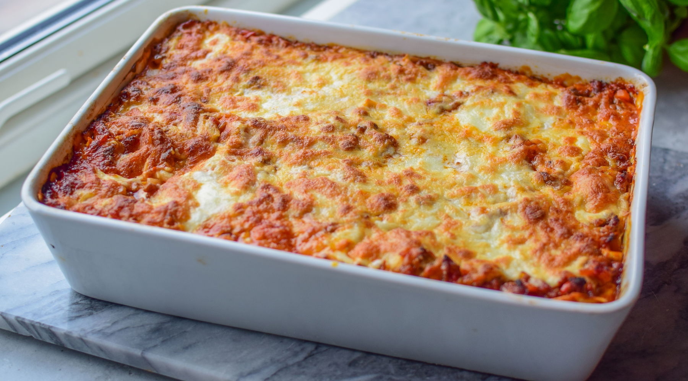

Lasagna
Go back
Lasagna is a classic Italian dish made with layers of pasta, meat, cheese, and sauce. It's a hearty and comforting meal that is perfect for family gatherings or special occasions. The key to a great lasagna is the balance of flavors and textures, with a rich meat sauce, creamy béchamel, and gooey cheese.
Ingredients:
- Lasagna noodles
- Ground beef or sausage
- Marinara sauce
- Ricotta cheese
- Mozzarella cheese
- Parmesan cheese
- Eggs
- Garlic
- Onion
- Olive oil
- Salt and pepper
Steps:
- Preheat the oven to 375°F (190°C).
- Cook the lasagna noodles according to package instructions.
- In a skillet, heat olive oil and sauté garlic and onion until translucent.
- Add ground beef or sausage and cook until browned. Drain excess fat.
- Stir in marinara sauce and simmer for 10 minutes.
- In a bowl, mix ricotta cheese, eggs, salt, and pepper.
- In a baking dish, layer noodles, meat sauce, ricotta mixture, mozzarella, and Parmesan.
- Repeat layers until all ingredients are used, finishing with cheese on top.
- Bake for 30-40 minutes until bubbly and golden brown.
- Let it cool for 10 minutes before serving.
